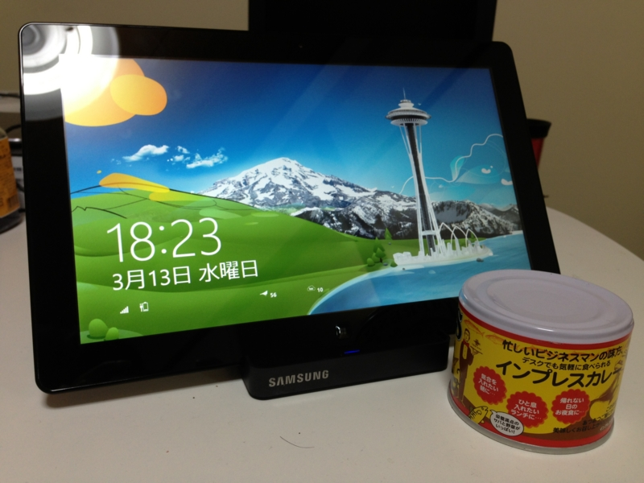

【1名様】 Metro で使える素敵なテキストエディターを作ってくれる方に、Samsung Series 7 Slate を差し上げます
執筆日時：

※インプレスカレーは付属いたしません。
Metro でうごくテキストエディター作ったるで！ という方は、連絡くれたら S7S あげます（会ったことある人、学生優遇。もしできなくても頑張った証拠があれば別に返せとは言いません）
Metro でうごく「まともな」テキストエディターかなｗ
物書き的には、? 指定行での折り返し ? 行・ルーラーの表示 ? キーバインドのカスタマイズ ? 正規表現検索・置換 ? できればマクロ はほしいかなー
S7S のスペックはご自分でご確認ください。
")
Samsung Series 7 XE700T1A-A01US 11.6-Inch Slate (64 GB, Win 7 HP)
- 出版社/メーカー: Samsung
- メディア: Personal Computers
- クリック: 1回
- この商品を含むブログを見る
リファービッシュ品と呼ばれる、初期不良で返品されたモノを直して再度出荷されたものですが、動作に支障はなかったかと。ドック×1とアダプター×2、ペン×2をオマケします。フツーに全部買えばだいぶかかるのでお得ですよ！
ただし、もともとの Windows 7環境はバックアップを取らずにぶっ壊し、代わりに MSDN 版の Windows 8 がインストールしてあります。引き渡すときはフォーマットしてしまいますので、自分の手で Windows 7 か Windows 8 を入れてください（インストールディスクはないけど、シリアル番号はあり）。必要であれば、Windows 8 Pro のアップデート版を実費（5,000円、安いうちに1本買ってあった分）でお分けします。つまり、使うに当たって面倒くさいことはそっちでやってください（ぉ
作ってほしいテキストエディターは……そうですね、できればタッチ操作でも満足に使えるもので（文字の選択などに工夫がある）、コンポーネント化されてほかのひとも使えるようだとベターですね（いや、そこまでじゃなくても！）。テキストボックスを貼り付けただけのモノなら僕でも作れるんで、それ以上のものを頑張って作ってください！
もし完成しなくても、自分の試行錯誤を公の場で発表していただければ（ブログや勉強会のセッションで）、別に責めたりはしません。とにかく、真面目に勉強してくれる人が使ってくれるとうれしいです。自分の方でも少し研究して、成果があれば共有していきたいと思います。
応募する方、聞きたいことがある方は @daruyanagi まで。
追記1
@daruyanagi 僕の方からもWin8開発本を2種類贈呈させて頂きますよ :-)
2013-03-13 14:28:48 via YoruFukurou to @daruyanagi
酢酸先生のご厚意で「Win8開発本を2種類」が戴けるそうです。やったね！ たぶん、アレとアレだと思います。
追記2
もしチャレンジする人がいなければ、プログラミング生放送勉強会 第22回＠松山 #pronama : ATND のじゃんけんの景品にでもしようかな。